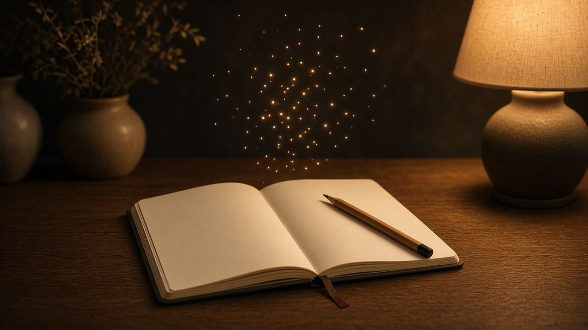
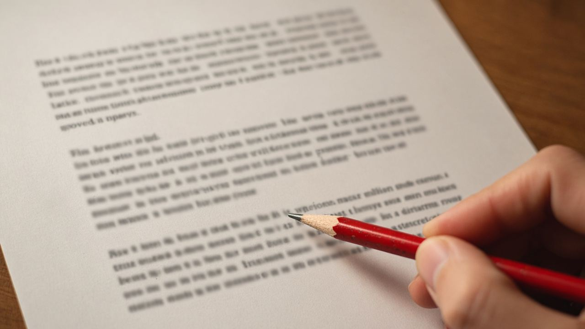

مجلة مداد
اقرَأ بوضوح، واستخدم الأداة وأنت فاهم حدودها.
جمال وصحة وأنواع أكل، وأبراج للتسلية، ومعرفة عامة، وأدوات، وذكاء اصطناعي، وأخبار فن من مصادرها، وقصص أصلية تتقرى فصل ورا فصل.
 إثارةآخر ميكروباصمتنزلش المحطة الجاية.
إثارةآخر ميكروباصمتنزلش المحطة الجاية.
قصص تتشاف قبل ما تتقرى
المكتبة
في ممر كوداك، رسمة بتاريخ متضاف، وراجل عايز يعلّقها قبل ما الحبر ينشف.

دقيقة ناقصة من تمثيلية إذاعة، وهامش بحبر أزرق حد عايز يشتريه قبل ما الاسم يتكتب.

الملخص اتكتب لوحده، وفيه اسم شارع سلمى. والأداة ما افتكرتهاش. حد كان حاطط البيت في الصندوق.

لوحة في بهو فندق على الكورنيش، وعليها ختم قريب من ختم نور. الإعلان هيتنشر بليل.
موبايل نسيه حد على كرسي الميكروباص، والرنة جاية باسم أخت ياسين.

كل ليلة الغلاية بتصفّر في الشقة اللي قدام مريم. ثلاث ليالي والسكون أطول من الصفارة.

ندى راجعة المنصورة لبيت جدتها. العمّين عايزين يبيعوا قبل ما تقرا الورقة اللي في الأوضة المقفولة.

رسالة وصلت لياسمين بالغلط في قطار إسكندرية، وصاحبها في نفس العربة، واللوحة هتتنسى على الرصيف.


الجمال
كل القسم بشرة
بشرةروتين بشرة من تلات خطوات يكفي أغلب الناس
غسيل لطيف، ترطيب، وواقي شمس. ليه الخطوات التلاتة أهم من رف مليان عبوات، وإمتى الروتين البسيط مش كفاية.
 بشرة
بشرةواقي الشمس: ليه هو أهم خطوة نهارية
SPF 30 وطيف واسع، وكمية تكفي الوش والرقبة، وإعادة كل ساعتين في الشمس. الظل والقبعة جزء من الحماية مش بديل وحيد.
 بشرة
بشرةبشرة دهنية وجافة وحساسة: الفرق من غير منتجات سحرية
إزاي تميّز نوع بشرتك من غير اختبار إعلان، وليه الدهنية تحتاج ترطيب، وإمتى الحساسية تخلّيك توقف العطور والأحماض.
الصحة
كل القسم صحة
صحةإمتى العرض يستاهل طبيب أو إسعاف
علامات ما تتستناش بيها مقال: ألم صدر، ضعف مفاجئ، ضيق نفس، نزيف، وأفكار أذى. والباقي يتفرز بهدوء مش برعب.
 صحة
صحةالنوم: سبع ساعات للبالغ مش تحدي بطولة
البالغين غالبًا محتاجين سبع ساعات أو أكتر. الشاشة في السرير، والكافيين متأخر، والقيلولة الطويلة، بتكسّر الليل.
 صحة
صحةالميّة: العطش مش قانون تمن كبايات
الاحتياج بيتغير مع الجو والحركة والأكل. لون البول دليل عملي، ومرضى القلب والكلى ليهم حد يحدده الطبيب.
 صحة
صحةالحركة: ١٥٠ دقيقة في الأسبوع هدف للبالغين
توصية منظمة الصحة للنشاط المتوسط، وتمارين القوة مرتين، وأي حركة أحسن من لا شيء. مش لازم جيم قبل ما تمشي.
 دايت
دايتأنواع الدايت: خريطة قبل ما تختار نمط أكل
الدايت نمط أكل يتكرر، مش عقوبة أسبوع. البحر المتوسط، والطبق، وداش، والنباتي، والصيام المتقطع، وليه الديتوكس مش نوع رابع.
 دايت
دايتالطبق المتوازن: نص خضار وربع بروتين وربع نشويات
نموذج طبق بسيط للغدا والعشا، من غير تطبيق سعرات. الخضار حجم، والبروتين شبع، والنشويات طاقة مش عدو.
أبراج
كل القسم أبراج
أبراجإزاي تقرأ برجك: شخصية، وعلاقات، وشغل
كل صفحة برج بتشرح الشخصية والعلاقات والشغل بالكلام العادي. الوصف شائع، ومش حكم على شخص بعينه.
 الحمل
الحملبرج الحمل: الشخصية والعلاقات والشغل
شرح واضح لبرج الحمل: شخصيته في كلام الأبراج، طريقته في العلاقات، والشغل اللي يناسبه.
 الثور
الثوربرج الثور: الشخصية والعلاقات والشغل
شرح واضح لبرج الثور: شخصيته في كلام الأبراج، طريقته في العلاقات، والشغل اللي يناسبه.
 الجوزاء
الجوزاءبرج الجوزاء: الشخصية والعلاقات والشغل
شرح واضح لبرج الجوزاء: شخصيته في كلام الأبراج، طريقته في العلاقات، والشغل اللي يناسبه.
 السرطان
السرطانبرج السرطان: الشخصية والعلاقات والشغل
شرح واضح لبرج السرطان: شخصيته في كلام الأبراج، طريقته في العلاقات، والشغل اللي يناسبه.
 الأسد
الأسدبرج الأسد: الشخصية والعلاقات والشغل
شرح واضح لبرج الأسد: شخصيته في كلام الأبراج، طريقته في العلاقات، والشغل اللي يناسبه.
معلومات عامة
كل القسم تحقق
تحققإزاي تتأكد من خبر قبل ما تشاركه
أربع خطوات عملية، من طريقة مايك كولفيلد، عشان تفرّق بين الصفحة الأصلية ولقطة الشاشة.
 حقوق
حقوقحقوق الصور: ملكية عامة، ورخصة مفتوحة، واستخدام تجاري
الفرق بين الملكية العامة ورخص المشاع الإبداعي، وليه رخصة الاستخدام غير التجاري ما تنفعش مع إعلان.
 ملفات
ملفاتأسماء الملفات والنسخ: قاعدة 3-2-1 من غير تعقيد
تسمية واضحة، وثلاث نسخ، ووسيطين، ونسخة برّه الجهاز. قاعدة حفظ معروفة ومش مرتبطة بمنتج.
أدوات
كل القسم صور
صورإزاي تضغط صورة وتفضل واضحة
الفرق بين JPEG وPNG وWebP، وليه رقم الجودة مش نسبة من جمال الصورة.
 PDF
PDFجمع ملفات PDF في ملف واحد
ترتيب الصفحات، والملفات المقفولة بكلمة سر، وليه النص يفضل يتحدد لو الدمج من غير إعادة رسم.
 كتابة
كتابةسيرة ذاتية من صفحة واحدة
إيه اللي يكفي في أول سيرة، وإزاي ملف Creativo Tools بينزل، وإيه حدود النص جواه.
ذكاء اصطناعي
كل القسم
أساسياتالنموذج اللغوي بيعمل إيه بالظبط
بيكمل النص حسب أنماط اتدرب عليها. مش قاعدة بيانات، ومش شخص فاكر المصدر.

مراجعةالجملة السلسة مش دليل إنها صحيحة
قائمة مراجعة للأسماء والتواريخ والاقتباسات قبل ما نص النموذج يدخل مقال أو إعلان.
 خصوصية
خصوصيةأداة في المتصفح ولا خدمة في السحابة
الفرق العملي: الملف بيخرج من جهازك ولا لأ، وإيه اللي لازم تقراه في شرح الأداة.